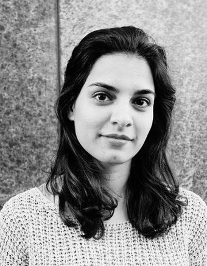

Bridging the gap with classical music
A very special choir presented by Sara Soltani, OLBIOS Correspondent in Austria.

SARA SOLTANI
OLBIOS CORRESPONDENT AUSTRIA
Open on original site ↗Even though Saeid Taghadossi and Firouzeh Navai founded the Tehran Flute Choir only five years ago, today it is hard to imagine the cultural and music scene in Iran without it. Firouzeh is also the founder of the Austrian-Iranian association Bridge of Art – Brücke der Kunst that supports young and talented musicians in Iran and organises workshops and concerts in Europe for them. Western classical music is, alongside traditional Persian music, essential in Iran and is gaining increasingly importance.
After studying music in Tehran and at the Music University in Vienna, Firouzeh Navai returned to her home country and joined the Symphony Orchestra of Teheran as first flutist and began teaching at the local conservatory. But the political unrest in 1980 forced her to leave the country and to continue her life as a musician in Austria. After almost 38 years, she and her husband and co-worker, Saeid Taghadossi, have returned to Iran to offer younger generations their knowledge of music. This was also why after so many years in exile, they decided to accept the current situation and work within the Islamic framework. ‘It is a compromise! You are forced to compromise in order to be able to perform!’, says Firouzeh.
The ensemble now has over 50 members and has created a growing interest internationally. Most members, who tend to be women, are university graduates who are themselves soloists and teachers at various institutes and orchestras. TFC has participated in well-known festivals and Jashnwareh, such as the Fajr Tehran Contemporary Music Festival and also workshops in Austria organized by Firouzeh Navai and the local conservatories and universities. In March 2018 was on a concert tour which brought the ensemble to important music universities and concert halls in Austria and Switzerland. This project is supported by the Austrian Embassy, Iranian cultural Institutions, Austrian music universities and most importantly, music teachers that offer free workshops for the Iranian musicians.
Website: http://tehranflutechoir.com/
SOURCE: OLBIOS